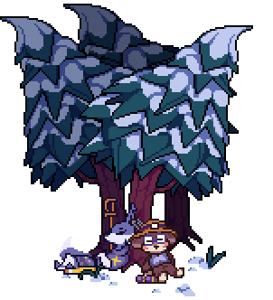
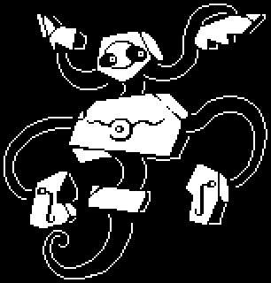
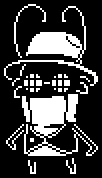
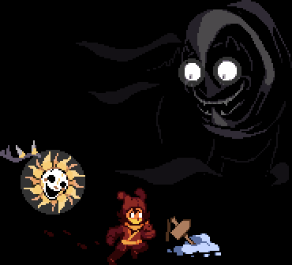
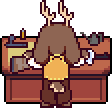
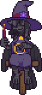
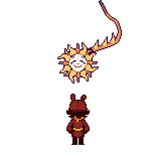

NEWSLETTER
Issue 1 (Post-Combat Demo)
Greetings from Team Wildfire! While summer may be nearing an end in the northern hemisphere, and the cool winds of autumn are just around the corner, one thing is still burning hot: Progress on UNDERTALE WILDFIRE!
If you're reading this, you've likely played our Combat Demo already. (If not, what are you waiting for??? Go do that!!!) Some of you may have discovered us just recently, while others may have had their eyes on us since the start of the year when we first banded together. Regardless though, we're glad to have your attention!
We've released some various teasers since January, including music, art, and confirmed canon characters who will be in the game. We're sure that Asgore making an appearance is something that caught everyone off guard when they first heard the news.
That said, while we've shared little teasers like that and have given you a small playable demo, we haven't really opened up much about how things are going behind the scenes. So, please accept our humble progress report.
We're sure one of the biggest questions stewing in everyone's head is, of course; “how much of the game is done?”. After all, you're itching to join Riley on their venture through the Underground, aren't you? You are. Well, the good news is that we've made a good deal of progress for our first area, Snowdown!
SNOWDOWN

Snowdown is the first area of Wildfire, and where Riley's adventure begins. As you may have noted from our introduction slides... Riley's story begins in a cabin in a snowy region of the Underground. Whereas Undertale starts you in the Ruins – a choice many of our peers have also opted to have their games begin – we're choosing to start off in a far, remote region of Snowdin. You'll be finding out more information on how Riley got themselves there when you play the Snowdown Demo.
That's right… Snowdown Demo! We're pleased that you've all been enjoying our Combat Demo, and sometime in the future we'll be releasing the entirety of Snowdown for you to play and enjoy.
Now, going back to the progress talk – all the main story points for Snowdown are finalized. Dialogue and NPCs are slowly being worked on and completed, concept art of the rooms are complete, and tiling of the actual map is coming along bit by bit. Our spriters and coders are working on assets a bit each day. Random encounters' bullet patterns and ACTs are finished.
In fact, we'd like you to meet a few of them!

Glyphtoffer will be one of the monsters who can show up in random encounters. You'll "rune" into them often.

You may also find yourself coming across Snugbug. We recommend cooperating with him.
And somewhere deep within Snowdown, you may come across a rather imposing figure…
They'll be waiting for you.
And finally - all of our Minibosses are finished and their assets are being created. A few of our Bosses are still being workshopped, and we're in the beginning phase of creating our Area Bosses.
BOSSES?!
MINIBOSSES??!
AREA BOSSES???!

Well, we don't want to give away all the details, but this newsletter is a great opportunity to talk about a certain creative direction we're going in. Given the themes we want to tackle with the story, and us wanting to explore a more elaborate combat system than Undertale had, we made the decision for Undertale Wildfire to have less of a focus on puzzles and instead have more boss fights.
In doing so, we aim to make combat feel interesting, and for all these different boss fights play out uniquely from each other and provide a memorable experience attached to the names of all those monsters you'll meet.
Of course, that doesn't mean there won't be puzzles! Rest assured that we'll have plenty of puzzling puzzles produced for you to ponder over and postulate the solution to each. We simply feel it fits the tone of Wildfire's gameplay to reduce the amount of puzzles to solve in favor of adding more boss fights along the way.
We hope that we'll succeed in this endeavor, and feel that the love you've shown for the Quigley & Anser fight tells us we're doing a good job with combat so far.
As for the rest of the game, we have most of the important stuff more or less figured out. This includes how we'd like for the routes to end, critical story elements, and who our main cast shall be composed of.
Think of it like a skeleton – We know the outline and what we want to do, and we're putting in all the different parts to make a walkin', talkin', functioning system.
(And don't worry, Luna fans. While she wasn't in the Combat Demo, you absolutely will be seeing her in Snowdown!)
((And Mr. Sunshine seems to have his fans too... So you guys can look forward to seeing him as well.))
RELEASE DATE?

Now, we don't have a planned release date for the Snowdown demo. Ideally... we want to get it out and in your hands as soon as we can! But obviously, having an entire area completed from every angle – music, writing, combat, cutscenes, etc., along with proper bug testing and combat balancing, will take time.
We also don't want to stress ourselves with having a strict deadline to have everything completed. (We kind of did this with the Combat Demo and didn't meet our initial internal deadline, so that was a learning experience!)
So while we won't make any promises on when you'll be able to play the Snowdown demo, we feel confident enough in saying that it's a very real possibility that it will be ready sometime in 2025.
That's where we currently stand with progress on the game. Generally speaking, we'll be tackling entire areas at once and then moving on linearly from there. So once Snowdown is mostly finished up, we'll begin working on the next area, and so on and so forth.
CONCLUSION
Thank you for taking the time to read! Again, all of us on Team Wildfire appreciate the support you've shown us, and we hope to see you again soon…
As a parting gift, we'd like for you to have an updated sprite of a certain bird NPC. Turns out, she'll actually have a bit of a bigger role than originally planned…

Oh, and, one last thing.
This may not make sense now. But one day, your future selves will understand it in full.
Bye!

P.S. Have you played the Combat Demo yet? If not, download it on Gamejolt!